New-commerce - Responsive WordPress e-Commerce Theme
- created: 12/05/2013
- latest update:09/09/2019
- by: F5 Themes
Compatible with: WordPress 4.x WooCommerce 3.7,0
You may contact us on: support@f5themes.com
Remember to rate our theme on Mojo's website, show your love! It will be very important to keep us motivated to improve our theme.
Current documentation was created to help you with quick installation and configuration of New-commerce theme. Please, read it carefully to avoid most of potential problems with incorrect configuration.
To install this theme you must have a working version of WordPress already installed. You should also install WooCommerce plugin for the correct work of our theme. The links for the plugins are provided below.
For detailed Wordpress installation instructions visit http://codex.wordpress.org/Installing_WordPress
For detailed WooCommerce installation instructions or for more information visit http://www.woothemes.com/woocommerce/
Download the zipped package from Mojo and extract to your desktop. In the extracted package you will find NCM_WordPress_Theme.zip file which is the WordPress theme.
You can install the theme in two ways:
-
WordPress: Navigate to Appearance -> Add New Themes -> Upload page. Select NCM_WordPress_Theme.zip file. Press the Install Now button to upload and install the theme;
-
FTP: Extract NCM_WordPress_Theme.zip file and upload the extracted folder to /wp-content/themes/ folder on your server. Navigate to Appearance -> Themes and activate New-commerce theme.
Once you have activated the theme you will need to change some of the pages and media settings for optimal performance.
The next step gives the opportunity to install automatically the Home Page with banners and product sliders, the page Contact Us with contact form. But do this at once after installation Wordpress and New-commerce theme, as this function works with database and it can break your settings.
You can make this installation manually as well
Follow the steps below and you will be adding content in no time.
Front page
-
Create a page called "Homepage" or whatever you like.
-
Select the Front Page template on the Page Attributes section.
- Save your page.
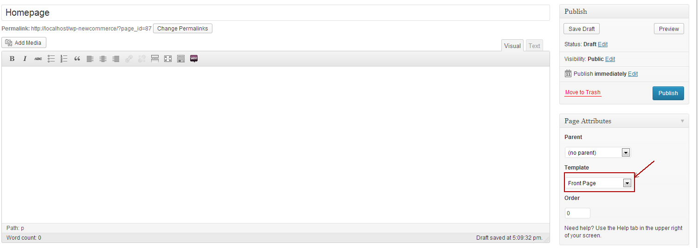
We have 3 different types of front page:
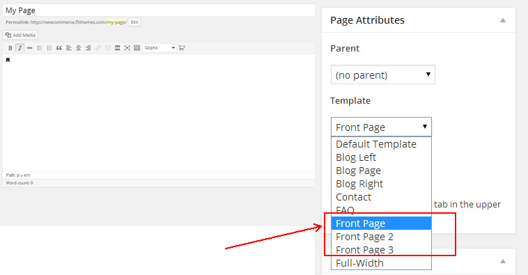
Examples:
- Front page: Slider + Recent Products + Best Sellers
You need to insert the slider shortcode in the page to make the slider works.
Revolution shortcode example: [rev_slider revolution]
Layer shortcode example: [layerslider id="1"]

- Front page 2: Last Products + Recommended/ Special Offers/ Best Sellers
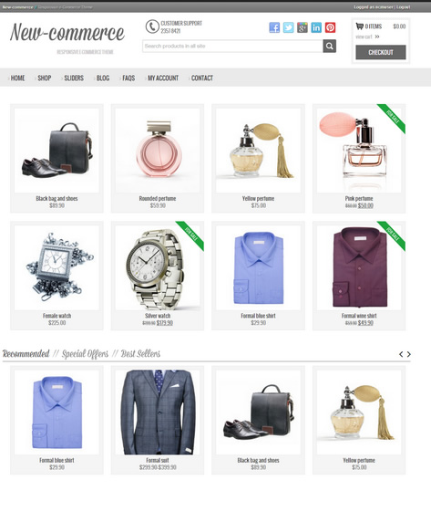
- Front page 3: Slider + 2 banners + Recommended/ Special Offers/ Best Sellers
You can copy and paste this code into your page to make the frontpage banners:
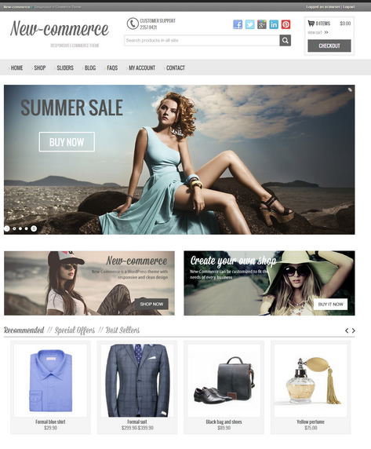
Blog
Create a page called Blog" (or whatever you want your blog called) and leave the page template as default.
Go to Settings -> Reading, and change the "Front page displays" setting to "A static page", set the front page to your homepage, and "Posts Page" to the blog page you just created.
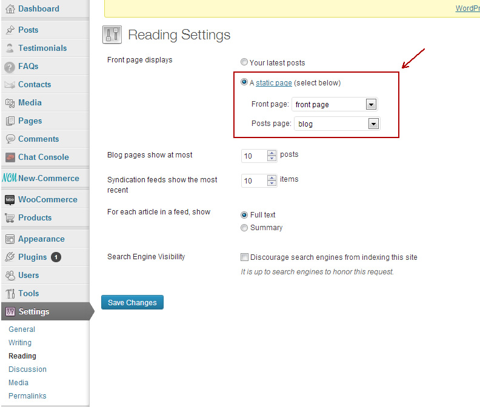
Products and categories import
Before you begin the importing process, set the recommended dimensions for images in WooCommerce settings (see WooCommerce Settings item)!
You may also import XML file, where some demo data from our site are, which can facilitate your work with the theme. XML file (NCM.woo_commerce.xml - WooCommerce) you can find in the archive.
For this you need:
-
Navigate to Tools -> Import and install WordPress import plugin.
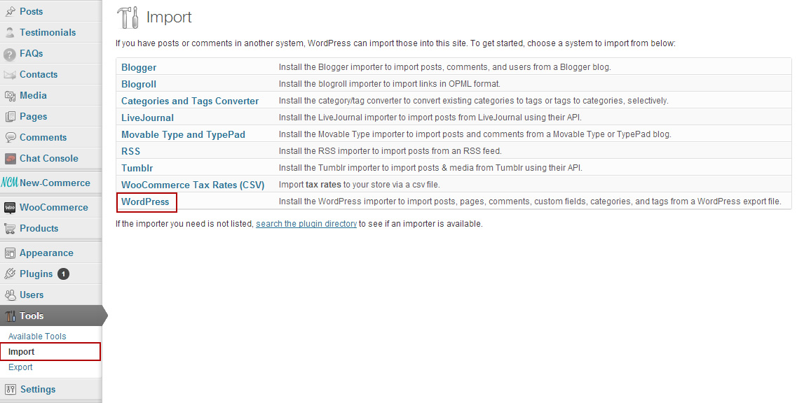
-
Select the XML file and upload it.
Do not forget:
- Folder wp-content/uploads should have permissions 777.
- Download and import file attachments should be checked.
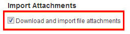
The theme supports two sliders, Layer Slider and Revolution Slider, the installation of which would be provided for you after theme activation.
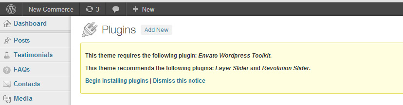
After that you may create the sliders and use them on the site according to the plugin documentation. We have included folders called "documentation_Revolution_Slider" and "documentation_Layer_Slider" that contain the documentation from the authors of the sliders. Please, refer to them for further information about sliders settings. Both of the sliders can be added to any page.
Layer Slider
To set up your Layer Slider follow the next steps:
- Navigate to Layer Slider WP.
- If you want, you may use our demo slides by coping the text from the demo_data/NCM-layer-slider-sample.json file and insert it into the Import Sliders area in plugin settings, as it mentioned on the screenshot. Next push Import button.
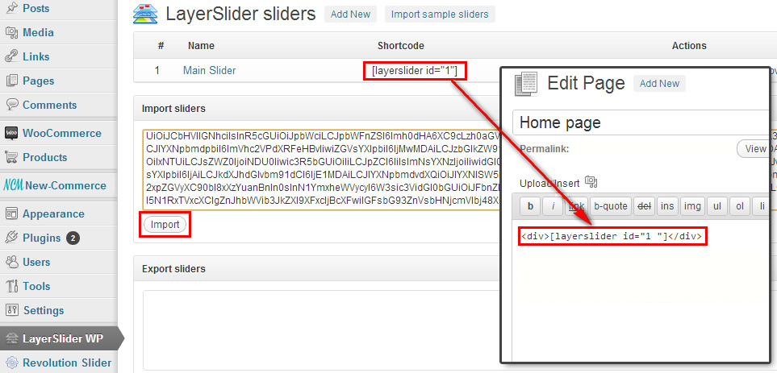
- Or you may import default layer sliders by pressing Import sample sliders button.
- Or create your own slider (press Add New button).
- After that you will reach a form where you are prompted to enter the slider name and set Global Settings.
- To create new slides, click on Add New Layer button.
- To add new content and animations over it, click on "add new sub layer" button for each different element you want to add.
- Once you have made your slides, press save.
- Include the Slider in our theme: insert the shortcode from the sliders table on the desired page, eg: Home page.
Revolution Slider
To setup Revolution Slider follow the next steps:
- Navigate to Revolution Slider -> Create New Slider.
- After that you will reach a form where you are prompted to enter the Sliders Basic Settings, a Slider Title and a Slider Alias.
- The next step is creating/editing slides. Insert the slider content.
- If you want, you may use our demo slides by importing the demo_data/NCM-revolution-slider-sample.zip file, as it mentioned on the screenshot. Upload file and next push Import Slider button.
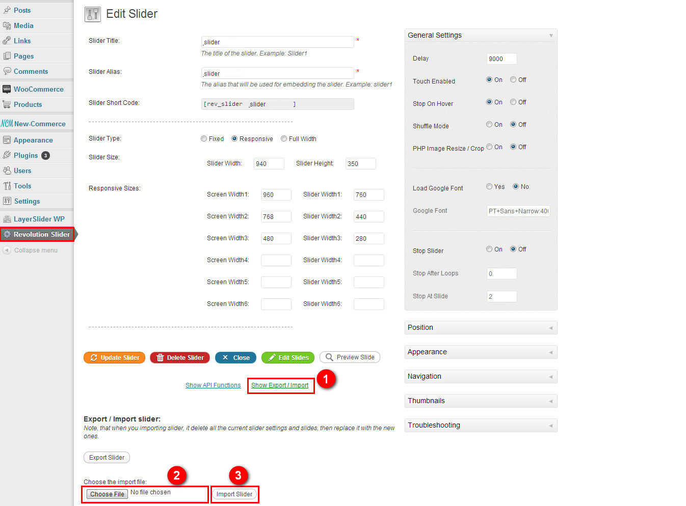
- Include the Slider in our theme: insert the shortcode from the sliders table on the desired page, eg: Home page.
Pay attention for the slider to be on the home page, you need to insert there the shortcode of the slider.
This theme supports the Screets live chat plugin.
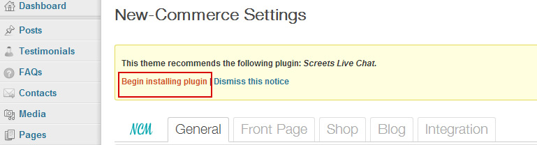
Install and activate the plugin.
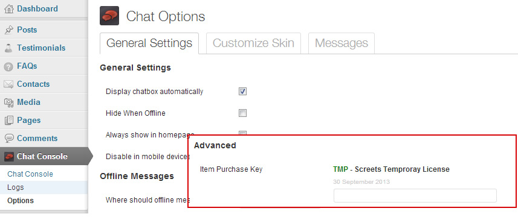
Once you have installed the plugin you can manage it in the Chat Console menu.
Remember to insert your Item Purchase Key to activate the plugin features, you can find it in the screets-live-chat folder. The chat will automatically appear on your site.
We have included a folder called "documentation_Screets_Live_Chat" that contain the documentation from the authors of the plugin. Please, refer to them for further information about the plugin settings
Styles and Scripts
- Styling: check Enable WooCommerce CSS
Recommended Products/ Special offers/ Best Sellers
- Best sellers: Top seller products, starting with random products when you don't have any sale.
- Special offers: products which have a price set in the Sale Price: ($) option.
- Recommended products: products which you have marked with a star in the WooCommerce product list.
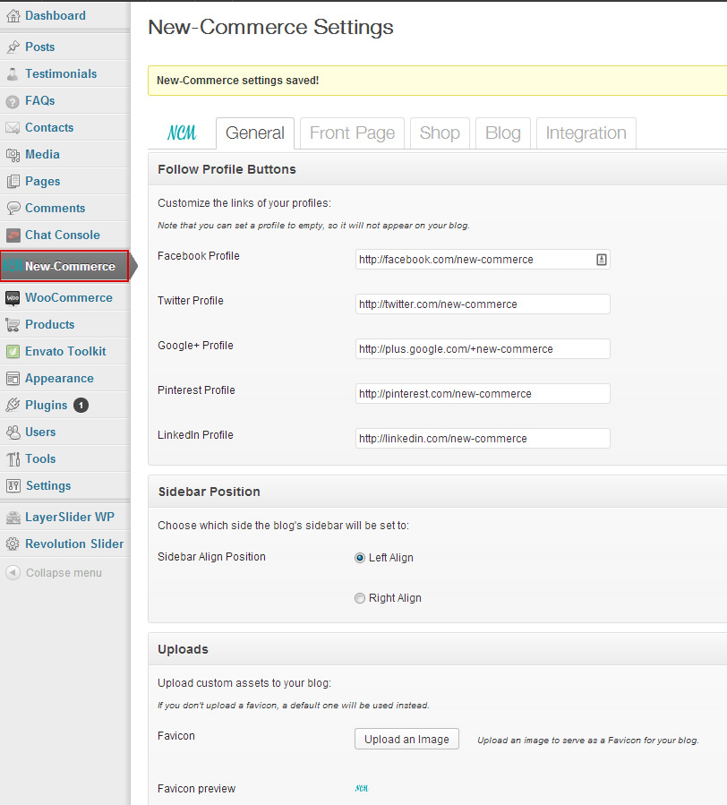
General
-
Follow profile buttons: Type your social networks profiles in each field. The follow buttons will appear in the top of the site. You can leave it empty to disable.
-
Sidebar Position: Choose wich position the sidebar will appear on your blog and shop. The default is left align.
-
Uploads:
- Favicon: Upload a favicon to your site, it's a small thumb that will appear on the left side of the navigation bar. Once you have upload your favicon click on the button "Choose this as my logo" to set your favicon.
- Logo: Upload a logo image that will replace the logo text on the header of your site. Click on "Upload a custom logo" and after you upload your image remember to uncheck the option "Show header text with your image".
- Background: Change the theme background, you can choose a color from the colorpicker or upload a background image, you can find some background patterns in your theme folder new-commerce/background-images
-
Color schemes: Set the default color of your site.
-
Font styles: You can change the theme typography here, the theme has 650 different fonts from Google fonts.
- Primary font: Choose the font you want for the menus, header options, products titles, post and page titles
- Secondary font: Choose the font you want for the text logo and widget titles
- General text font: Choose the font you want for the general text from the blog posts and products description
Front page
-
Slider Total Products: Choose how many products will be displayed in each products slider.
-
Front Page Features: Choose each feature that will be displayed on your front page.
Shop Options
-
Shop Options: Type the shop address and phone number that will be displayed on the contact page.
-
Shop Map: Here you can setup your site to show an address map on the contact page.
To find the latitude and longitude, type your address in this page.
-
Product Default View mode: Choose which view mode the products on the Shop page will be shown (note that this setting doesn't apply to sliders like the 'Best Sellers' or 'Recommended', etc).
-
Shop total products: Set how many products will be displayed on your shop page and products slider.
-
Shop Features: Set each feature that will be displayed on your shop page.
Blog
-
Posts: Set each feature that will be displayed on your blog page.
Integration
-
Custom Header Code: Insert the code that you want to be displayed on your the header of your site, such as javascript.
-
Google Analytics: Insert your Google Analytics code.
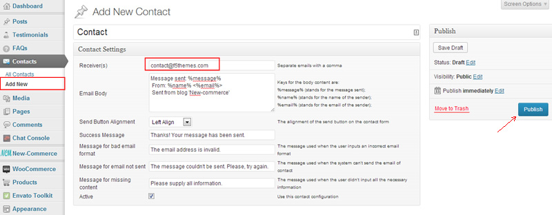
Here you can create a contact form.
Choose the receiver email and publish.
After that, create a new page named "Contact" or whatever you like.
Choose the contact page template from the menu and publish your page.
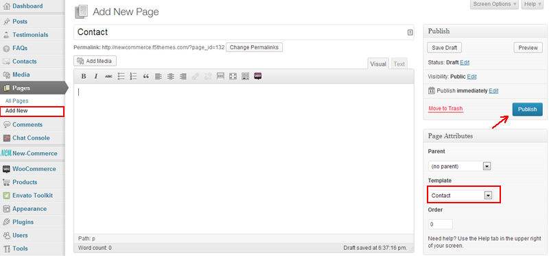
FAQs
Here you can write your FAQs (frequently asked questions).
Once you have finished writing your questions, you can set up the page where the questions will be displayed.
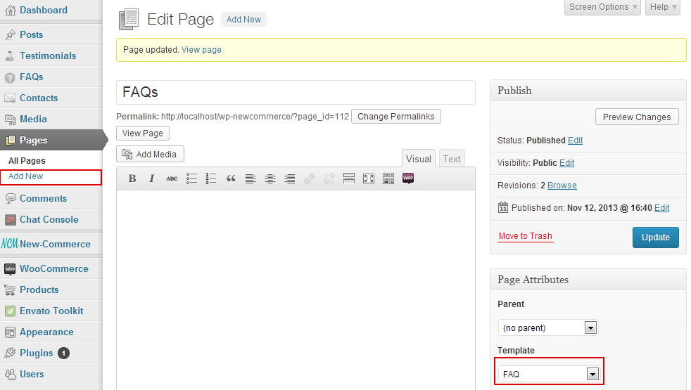
Create a new empty page called "FAQs" or whatever you like.
Select the FAQ page template and publish your page.
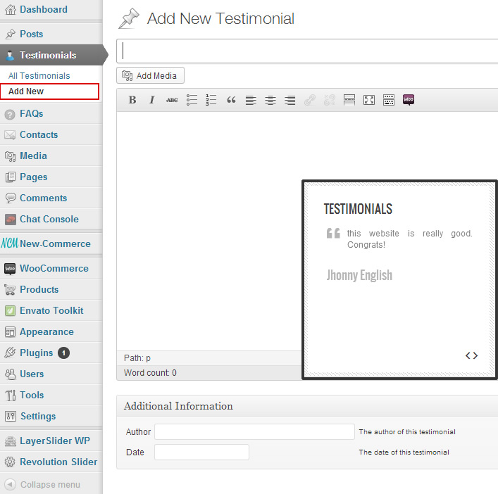
Here you can write and manage the testimonials that will be displayed on your front page widget.
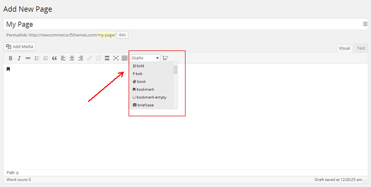
You can add FontAwesome icons to your pages or posts. Here you can find a list with all icons supported.
- [ncm_products_slider_stack] - Outputs a stacked slider (with an inner Recommended slider, a Special Offers slider and a Best Sellers slider).
- [ncm_product_added_message] - Outputs where the "added product" message will be placed (should be used before the shortcode [ncm_products_slider_stack]).
- [ncm_button] - Outputs the default button of New-Commerce. Accepts a link and a text as parameters.
- [ncm_2arrows_before_link] - Outputs a link with 2 arrows before it (just like the ">> go to blog" link on our Front Page 1, on the footer). Accepts a link and a text as parameters.
- [ncm_2arrows_after_link] - Outputs a link with 2 arrows afterit (just like the "view cart >>" link on header). Accepts a link and a text as parameters.
- [ncm_2_banner_area] - Outputs a container to be used with the shortcodes [ncm_left_banner] and [ncm_right_banner]. It must be used with them, by using it, these shortcodes become responsive.
- [ncm_left_banner] - Outputs a left banner. Should be used with the shortcode [ncm_2_banner_area]. Accepts an image link, a title and a link as parameters.
- [ncm_right_banner] - Outputs a right banner. Should be used with the shortcode [ncm_2_banner_area]. Accepts an image link, a title and a link as parameters.
- [ncm_products_slider_stack]
- [ncm_product_added_message]
- [ncm_button link="http://www.google.com" text="Google"]
- [ncm_2arrows_before_link link="http://www.google.com" text="Google"]
- [ncm_2arrows_after_link link="http://www.google.com" text="Google"]
-
[ncm_2_banner_area]
[ncm_left_banner image="http://www.link.com/to/image/123.jpg" title="Image 1" link="http://www.google.com"]
[ncm_right_banner image="http://www.link.com/to/image/456.jpg" title="Image 2" link="http://www.google.com"]
[/ncm_2_banner_area]
The translation file you can be found inside the languages folder (/wp-content/themes/new-commerce/languages). Edit the .pot file using POEdit, using the translation fields to make replacements. Read here how to do it the right way.
From the file menu, save the file with your language name e.g de_DE.po into languages folder. It will generate both a .po and .mo file for your translation.
Next, edit wp-config.php located in the root folder of wordpress and define the WPLANG prefix with your language name which should be similar to the translation file name.
This theme imports some extra scripts.
- carouFredSel
- FlexSlider
- scrollUp plugin
- Bootstrap V2
- prettyPhoto